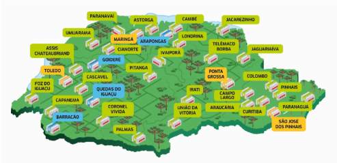

TADS
A modalidade tecnólogo é um curso superior, reconhecido pelo MEC, que habilita o profissional a atuar em diversos nichos de mercado. As disciplinas do curso fornecem o embasamento para que o aluno adquira conhecimento técnico e desenvolva autonomia para atuar nos diversos setores da área de tecnologia da informação
Aptidões da Formação
- Analisar, projetar, documentar, especificar, testar, implantar e manter sistemas computacionais de informação;
- Desenvolver sistemas Web, dispositivos móveis, ferramentas computacionais e metodologias de projetos na produção de sistemas;
- Empreender seu próprio negócio;
- Atuar como analista/programador de software;
- Atuar na área acadêmica.
Disciplinas do curso
| 1º Semestre |
|---|
| Lógica de programação |
| Introdução a computação |
| Desenvolvimento Web I |
| Matemática Aplicada |
| Inglês técnico |
| 2º Semestre |
|---|
| Banco de Dados I |
| Estrutura de Dados |
| Sistemas Operacionais |
| Orientação a Objetos |
| Desenvolvimento Web II |
IFPR
O Instituto Federal do Paraná (IFPR) é uma instituição pública federal de ensino vinculada ao Ministério da Educação (MEC) por meio da Secretaria de Educação Profissional e Tecnológica (Setec). É voltada à educação superior, básica e profissional, especializada na oferta gratuita de educação profissional e tecnológica nas diferentes modalidades e níveis de ensino.
Origem
A instituição foi criada em dezembro de 2008 através da Lei 11.892, que instituiu a Rede Federal de Educação Profissional e Tecnológica e os 38 institutos federais hoje existentes no país. Com a Lei em vigor, a Escola Técnica da Universidade Federal do Paraná (ET-UFPR) foi transformada no IFPR, que hoje possui autonomia administrativa e pedagógica.
Presença do IFPR no Paraná
O IFPR está presente em 33 cidades do Estado do Paraná e conta com cerca de 30.000 alunos e 2700 profissionais que atuam tanto na área acadêmica quanto na administrativa. O Instituto oferece 30 cursos profissionalizantes integrados ao ensino médio, 31 cursos técnicos subsequentes, 47 cursos de graduação e 5 programas de mestrado.